EDA - Exploratory Data Analysis#
Importar Librerías#
Se importan las librerías esenciales para facilitar el análisis que abarca la carga de datos, la evaluación estadística, la visualización, la transformación de datos, la fusión y la unión.
import pandas as pd
import numpy as np
import matplotlib.pyplot as plt
import seaborn as sns
import scipy.stats as stats
Se Instala el paquete ucimlrepo desde PyPI (Python Package Index).
Este paquete permite acceder a datasets del repositorio UCI Machine Learning.
pip install ucimlrepo
Requirement already satisfied: ucimlrepo in c:\users\user\miniconda3\envs\ml_venv\lib\site-packages (0.0.7)
Requirement already satisfied: pandas>=1.0.0 in c:\users\user\miniconda3\envs\ml_venv\lib\site-packages (from ucimlrepo) (2.3.1)
Requirement already satisfied: certifi>=2020.12.5 in c:\users\user\miniconda3\envs\ml_venv\lib\site-packages (from ucimlrepo) (2023.7.22)
Requirement already satisfied: numpy>=1.22.4 in c:\users\user\miniconda3\envs\ml_venv\lib\site-packages (from pandas>=1.0.0->ucimlrepo) (1.25.2)
Requirement already satisfied: python-dateutil>=2.8.2 in c:\users\user\miniconda3\envs\ml_venv\lib\site-packages (from pandas>=1.0.0->ucimlrepo) (2.8.2)
Requirement already satisfied: pytz>=2020.1 in c:\users\user\miniconda3\envs\ml_venv\lib\site-packages (from pandas>=1.0.0->ucimlrepo) (2023.3)
Requirement already satisfied: tzdata>=2022.7 in c:\users\user\miniconda3\envs\ml_venv\lib\site-packages (from pandas>=1.0.0->ucimlrepo) (2023.3)
Requirement already satisfied: six>=1.5 in c:\users\user\miniconda3\envs\ml_venv\lib\site-packages (from python-dateutil>=2.8.2->pandas>=1.0.0->ucimlrepo) (1.16.0)
Note: you may need to restart the kernel to use updated packages.
Lectura de Datos#
Se Importa la función fetch_ucirepo del paquete ucimlrepo.
fetch_ucirepo es la función clave para descargar datasets usando su ID único.
from ucimlrepo import fetch_ucirepo
# fetch dataset
predict_students_dropout_and_academic_success = fetch_ucirepo(id=697)
# data (as pandas dataframes)
X = predict_students_dropout_and_academic_success.data.features
y = predict_students_dropout_and_academic_success.data.targets
# metadata
print(predict_students_dropout_and_academic_success.metadata)
df = pd.concat([X, y], axis=1)
{'uci_id': 697, 'name': "Predict Students' Dropout and Academic Success", 'repository_url': 'https://archive.ics.uci.edu/dataset/697/predict+students+dropout+and+academic+success', 'data_url': 'https://archive.ics.uci.edu/static/public/697/data.csv', 'abstract': "A dataset created from a higher education institution (acquired from several disjoint databases) related to students enrolled in different undergraduate degrees, such as agronomy, design, education, nursing, journalism, management, social service, and technologies.\nThe dataset includes information known at the time of student enrollment (academic path, demographics, and social-economic factors) and the students' academic performance at the end of the first and second semesters. \nThe data is used to build classification models to predict students' dropout and academic sucess. The problem is formulated as a three category classification task, in which there is a strong imbalance towards one of the classes.", 'area': 'Social Science', 'tasks': ['Classification'], 'characteristics': ['Tabular'], 'num_instances': 4424, 'num_features': 36, 'feature_types': ['Real', 'Categorical', 'Integer'], 'demographics': ['Marital Status', 'Education Level', 'Nationality', 'Occupation', 'Gender', 'Age'], 'target_col': ['Target'], 'index_col': None, 'has_missing_values': 'no', 'missing_values_symbol': None, 'year_of_dataset_creation': 2021, 'last_updated': 'Mon Feb 26 2024', 'dataset_doi': '10.24432/C5MC89', 'creators': ['Valentim Realinho', 'Mónica Vieira Martins', 'Jorge Machado', 'Luís Baptista'], 'intro_paper': {'ID': 99, 'type': 'NATIVE', 'title': "Early prediction of student's performance in higher education: a case study", 'authors': 'Mónica V. Martins, Daniel Tolledo, Jorge Machado, Luís M. T. Baptista, and Valentim Realinho', 'venue': 'Trends and Applications in Information Systems and Technologies', 'year': 2021, 'journal': 'Advances in Intelligent Systems and Computing series', 'DOI': 'http://www.doi.org/10.1007/978-3-030-72657-7_16', 'URL': 'http://www.worldcist.org/2021/', 'sha': None, 'corpus': None, 'arxiv': None, 'mag': None, 'acl': None, 'pmid': None, 'pmcid': None}, 'additional_info': {'summary': None, 'purpose': 'The dataset was created in a project that aims to contribute to the reduction of academic dropout and failure in higher education, by using machine learning techniques to identify students at risk at an early stage of their academic path, so that strategies to support them can be put into place. \n\nThe dataset includes information known at the time of student enrollment – academic path, demographics, and social-economic factors. \n\nThe problem is formulated as a three category classification task (dropout, enrolled, and graduate) at the end of the normal duration of the course. \n', 'funded_by': 'This dataset is supported by program SATDAP - Capacitação da Administração Pública under grant POCI-05-5762-FSE-000191, Portugal.', 'instances_represent': 'Each instance is a student', 'recommended_data_splits': 'The dataset was used, in our project, with a data split of 80% for training and 20% for test.', 'sensitive_data': None, 'preprocessing_description': 'We performed a rigorous data preprocessing to handle data from anomalies, unexplainable outliers, and missing values.', 'variable_info': None, 'citation': 'If you use this dataset in experiments for a scientific publication, please kindly cite our paper: \nM.V.Martins, D. Tolledo, J. Machado, L. M.T. Baptista, V.Realinho. (2021) "Early prediction of student’s performance in higher education: a case study" Trends and Applications in Information Systems and Technologies, vol.1, in Advances in Intelligent Systems and Computing series. Springer. DOI: 10.1007/978-3-030-72657-7_16'}}
Se muestran las primeras filas del DataFrame con todos los detalles.
Se usa .to_string() para evitar el truncamiento de columnas y lograr mostrar todas las variables.
print(df.head().to_string())
Marital Status Application mode Application order Course Daytime/evening attendance Previous qualification Previous qualification (grade) Nacionality Mother's qualification Father's qualification Mother's occupation Father's occupation Admission grade Displaced Educational special needs Debtor Tuition fees up to date Gender Scholarship holder Age at enrollment International Curricular units 1st sem (credited) Curricular units 1st sem (enrolled) Curricular units 1st sem (evaluations) Curricular units 1st sem (approved) Curricular units 1st sem (grade) Curricular units 1st sem (without evaluations) Curricular units 2nd sem (credited) Curricular units 2nd sem (enrolled) Curricular units 2nd sem (evaluations) Curricular units 2nd sem (approved) Curricular units 2nd sem (grade) Curricular units 2nd sem (without evaluations) Unemployment rate Inflation rate GDP Target
0 1 17 5 171 1 1 122.0 1 19 12 5 9 127.3 1 0 0 1 1 0 20 0 0 0 0 0 0.000000 0 0 0 0 0 0.000000 0 10.8 1.4 1.74 Dropout
1 1 15 1 9254 1 1 160.0 1 1 3 3 3 142.5 1 0 0 0 1 0 19 0 0 6 6 6 14.000000 0 0 6 6 6 13.666667 0 13.9 -0.3 0.79 Graduate
2 1 1 5 9070 1 1 122.0 1 37 37 9 9 124.8 1 0 0 0 1 0 19 0 0 6 0 0 0.000000 0 0 6 0 0 0.000000 0 10.8 1.4 1.74 Dropout
3 1 17 2 9773 1 1 122.0 1 38 37 5 3 119.6 1 0 0 1 0 0 20 0 0 6 8 6 13.428571 0 0 6 10 5 12.400000 0 9.4 -0.8 -3.12 Graduate
4 2 39 1 8014 0 1 100.0 1 37 38 9 9 141.5 0 0 0 1 0 0 45 0 0 6 9 5 12.333333 0 0 6 6 6 13.000000 0 13.9 -0.3 0.79 Graduate
Se muestran las últimas filas del DataFrame con todos los detalles.
Se usa .to_string() para evitar el truncamiento de columnas y lograr mostrar todas las variables.
print(df.tail().to_string())
Marital Status Application mode Application order Course Daytime/evening attendance Previous qualification Previous qualification (grade) Nacionality Mother's qualification Father's qualification Mother's occupation Father's occupation Admission grade Displaced Educational special needs Debtor Tuition fees up to date Gender Scholarship holder Age at enrollment International Curricular units 1st sem (credited) Curricular units 1st sem (enrolled) Curricular units 1st sem (evaluations) Curricular units 1st sem (approved) Curricular units 1st sem (grade) Curricular units 1st sem (without evaluations) Curricular units 2nd sem (credited) Curricular units 2nd sem (enrolled) Curricular units 2nd sem (evaluations) Curricular units 2nd sem (approved) Curricular units 2nd sem (grade) Curricular units 2nd sem (without evaluations) Unemployment rate Inflation rate GDP Target
4419 1 1 6 9773 1 1 125.0 1 1 1 5 4 122.2 0 0 0 1 1 0 19 0 0 6 7 5 13.600000 0 0 6 8 5 12.666667 0 15.5 2.8 -4.06 Graduate
4420 1 1 2 9773 1 1 120.0 105 1 1 9 9 119.0 1 0 1 0 0 0 18 1 0 6 6 6 12.000000 0 0 6 6 2 11.000000 0 11.1 0.6 2.02 Dropout
4421 1 1 1 9500 1 1 154.0 1 37 37 9 9 149.5 1 0 0 1 0 1 30 0 0 7 8 7 14.912500 0 0 8 9 1 13.500000 0 13.9 -0.3 0.79 Dropout
4422 1 1 1 9147 1 1 180.0 1 37 37 7 4 153.8 1 0 0 1 0 1 20 0 0 5 5 5 13.800000 0 0 5 6 5 12.000000 0 9.4 -0.8 -3.12 Graduate
4423 1 10 1 9773 1 1 152.0 22 38 37 5 9 152.0 1 0 0 1 0 0 22 1 0 6 8 6 11.666667 0 0 6 6 6 13.000000 0 12.7 3.7 -1.70 Graduate
Se presenta un resumen detallado de todas las variables del dataset, incluyendo su rol (predictora o objetivo), el tipo de dato (entero, categórico, punto flotante) y la identificación de valores faltantes, lo que permite evaluar la integridad y estructura de los datos para su posterior procesamiento.
# variable information
print(predict_students_dropout_and_academic_success.variables)
name role type \
0 Marital Status Feature Integer
1 Application mode Feature Integer
2 Application order Feature Integer
3 Course Feature Integer
4 Daytime/evening attendance Feature Integer
5 Previous qualification Feature Integer
6 Previous qualification (grade) Feature Continuous
7 Nacionality Feature Integer
8 Mother's qualification Feature Integer
9 Father's qualification Feature Integer
10 Mother's occupation Feature Integer
11 Father's occupation Feature Integer
12 Admission grade Feature Continuous
13 Displaced Feature Integer
14 Educational special needs Feature Integer
15 Debtor Feature Integer
16 Tuition fees up to date Feature Integer
17 Gender Feature Integer
18 Scholarship holder Feature Integer
19 Age at enrollment Feature Integer
20 International Feature Integer
21 Curricular units 1st sem (credited) Feature Integer
22 Curricular units 1st sem (enrolled) Feature Integer
23 Curricular units 1st sem (evaluations) Feature Integer
24 Curricular units 1st sem (approved) Feature Integer
25 Curricular units 1st sem (grade) Feature Integer
26 Curricular units 1st sem (without evaluations) Feature Integer
27 Curricular units 2nd sem (credited) Feature Integer
28 Curricular units 2nd sem (enrolled) Feature Integer
29 Curricular units 2nd sem (evaluations) Feature Integer
30 Curricular units 2nd sem (approved) Feature Integer
31 Curricular units 2nd sem (grade) Feature Integer
32 Curricular units 2nd sem (without evaluations) Feature Integer
33 Unemployment rate Feature Continuous
34 Inflation rate Feature Continuous
35 GDP Feature Continuous
36 Target Target Categorical
demographic description units \
0 Marital Status 1 – single 2 – married 3 – widower 4 – divorce... None
1 None 1 - 1st phase - general contingent 2 - Ordinan... None
2 None Application order (between 0 - first choice; a... None
3 None 33 - Biofuel Production Technologies 171 - Ani... None
4 None 1 – daytime 0 - evening None
5 Education Level 1 - Secondary education 2 - Higher education -... None
6 None Grade of previous qualification (between 0 and... None
7 Nationality 1 - Portuguese; 2 - German; 6 - Spanish; 11 - ... None
8 Education Level 1 - Secondary Education - 12th Year of Schooli... None
9 Education Level 1 - Secondary Education - 12th Year of Schooli... None
10 Occupation 0 - Student 1 - Representatives of the Legisla... None
11 Occupation 0 - Student 1 - Representatives of the Legisla... None
12 None Admission grade (between 0 and 200) None
13 None 1 – yes 0 – no None
14 None 1 – yes 0 – no None
15 None 1 – yes 0 – no None
16 None 1 – yes 0 – no None
17 Gender 1 – male 0 – female None
18 None 1 – yes 0 – no None
19 Age Age of studend at enrollment None
20 None 1 – yes 0 – no None
21 None Number of curricular units credited in the 1st... None
22 None Number of curricular units enrolled in the 1st... None
23 None Number of evaluations to curricular units in t... None
24 None Number of curricular units approved in the 1st... None
25 None Grade average in the 1st semester (between 0 a... None
26 None Number of curricular units without evalutions ... None
27 None Number of curricular units credited in the 2nd... None
28 None Number of curricular units enrolled in the 2nd... None
29 None Number of evaluations to curricular units in t... None
30 None Number of curricular units approved in the 2nd... None
31 None Grade average in the 2nd semester (between 0 a... None
32 None Number of curricular units without evalutions ... None
33 None Unemployment rate (%) None
34 None Inflation rate (%) None
35 None GDP None
36 None Target. The problem is formulated as a three c... None
missing_values
0 no
1 no
2 no
3 no
4 no
5 no
6 no
7 no
8 no
9 no
10 no
11 no
12 no
13 no
14 no
15 no
16 no
17 no
18 no
19 no
20 no
21 no
22 no
23 no
24 no
25 no
26 no
27 no
28 no
29 no
30 no
31 no
32 no
33 no
34 no
35 no
36 no
Interpretación del Dataset
Este resumen del conjunto de datos indica que es una colección exhaustiva de información sobre estudiantes, con el objetivo principal de identificar a los estudiantes en riesgo en una etapa temprana de su trayectoria académica, de modo que se puedan implementar estrategias de apoyo. Los datos combinan características personales, socioeconómicas y académicas, lo que permite un análisis multifacético de los factores que influyen en el rendimiento de los estudiantes.
Variables demográficas y personales: Estas incluyen datos como el estado civil, la edad al matricularse, el género, la nacionalidad y si el estudiante es internacional. Estas características son importantes para comprender la composición de la población estudiantil y cómo los factores personales pueden estar relacionados con el éxito académico.
Variables socioeconómicas: Este grupo abarca el nivel educativo y la ocupación de los padres, si el estudiante es becario, si es deudor o si sus matrículas están al día. También incluye indicadores macroeconómicos como la tasa de desempleo, la tasa de inflación y el GDP. Estas variables ofrecen información valiosa sobre el entorno socioeconómico de los estudiantes y cómo las condiciones externas pueden afectar su rendimiento.
Variables académicas y de admisión: Aquí se encuentran los detalles del proceso de admisión, como el modo y orden de la solicitud, la calificación de admisión y la calificación de la titulación previa. También se incluyen datos detallados del rendimiento académico en los dos primeros semestres, como el número de créditos aprobados, el número de unidades curriculares inscritas y la calificación media de cada semestre. Estos datos son cruciales para evaluar el progreso académico y detectar posibles problemas desde el principio.
La ausencia de valores faltantes facilita el análisis, y las descripciones detalladas de cada campo ayudan a contextualizar su relevancia académica.
Se calcula el número de valores únicos para cada variable del DataFrame.
df.nunique()
Marital Status 6
Application mode 18
Application order 8
Course 17
Daytime/evening attendance 2
Previous qualification 17
Previous qualification (grade) 101
Nacionality 21
Mother's qualification 29
Father's qualification 34
Mother's occupation 32
Father's occupation 46
Admission grade 620
Displaced 2
Educational special needs 2
Debtor 2
Tuition fees up to date 2
Gender 2
Scholarship holder 2
Age at enrollment 46
International 2
Curricular units 1st sem (credited) 21
Curricular units 1st sem (enrolled) 23
Curricular units 1st sem (evaluations) 35
Curricular units 1st sem (approved) 23
Curricular units 1st sem (grade) 797
Curricular units 1st sem (without evaluations) 11
Curricular units 2nd sem (credited) 19
Curricular units 2nd sem (enrolled) 22
Curricular units 2nd sem (evaluations) 30
Curricular units 2nd sem (approved) 20
Curricular units 2nd sem (grade) 782
Curricular units 2nd sem (without evaluations) 10
Unemployment rate 10
Inflation rate 9
GDP 10
Target 3
dtype: int64
Interpretación de los Valores Únicos
El número de valores únicos en cada variable revela su tipo y la granularidad de los datos. Una cantidad baja de valores únicos indica una variable categórica o binaria, mientras que una cantidad alta sugiere una variable continua o con una amplia variedad de categorías.
Variables binarias o categóricas de bajo nivel
Las variables con 2 valores únicos son típicamente binarias, lo que significa que solo tienen dos estados posibles. Esto se observa en variables como:Asistencia diurna/nocturna: Diferencia a los estudiantes en dos grupos.
Desplazado, Deudor, Necesidades educativas especiales, Becario, Internacional: Variables que indican la presencia o ausencia de una característica específica (Si/No).
Género: Distingue entre dos categorías de género.
Matrículas al día: Indica si los pagos están completos o no.
Variables categóricas de nivel medio
Las variables con un rango de entre 3 y 46 valores únicos son categóricas. Estas variables permiten la segmentación de la población estudiantil en grupos más diversos. Ejemplos notables incluyen:Estado civil (6 valores): Proporciona varias categorías para el estado civil.
Nacionalidad (21 valores): Permite analizar el rendimiento por país de origen.
Curso (17 valores): Posibilita comparar el desempeño en diferentes programas de estudio.
Ocupación de la madre y del padre (32 y 46 valores, respectivamente): Ofrece una visión detallada de los antecedentes laborales de los padres.
La variable Objetivo (3 valores) es un caso especial y muy importante. Sus 3 valores únicos confirman que el problema es de clasificación multicategoría, para predecir si un estudiante abandonará, se graduará o continuará.
Variables continuas o con alta granularidad
Las variables con un número elevado de valores únicos, como más de 100, suelen ser de tipo continuo o tener una alta granularidad. Estas variables son cruciales para un análisis detallado y matizado:Calificación de admisión (620 valores): Indica una amplia gama de puntuaciones de entrada.
Calificación de la titulación previa (101 valores): Muestra la diversidad en las notas obtenidas por los estudiantes en su educación anterior.
Calificación media del 1er y 2º semestre (797 y 782 valores, respectivamente): Estas variables son fundamentales para medir el rendimiento académico de manera precisa, ya que cada estudiante puede tener un promedio de notas único.
Edad al matricularse (46 valores): Muestra una distribución variada de edades de los estudiantes.
El conjunto de datos es rico y diversificado, con una combinación equilibrada de variables binarias, categóricas y continuas. Esta diversidad lo hace muy adecuado para realizar un análisis predictivo y descriptivo que identifique patrones y factores clave que influyen en el resultado final del estudiante, ya sea que continúe, abandone o se gradúe.
Análisis Univariado#
El Análisis Univariado es la primera fase del análisis exploratorio de datos. Se enfoca en el estudio individual de cada variable para entender su distribución, características y valores atípicos. Esto permite identificar patrones y la calidad de los datos antes de un análisis más complejo.
Variables Binarias#
A continuación, se genera un doble gráfico para cada variable binaria, permitiendo comparar su distribución mediante:
Gráfico de Barras:
Muestra el conteo absoluto de cada categoría (0 y 1).
Ideal para comparar magnitudes visualmente.
Gráfico de Torta:
Muestra la proporción porcentual de cada categoría.
Útil para entender el balance/imbalance entre clases.
# Filtrar variables binarias
binarias = [col for col in df.columns if df[col].nunique() == 2]
for col in binarias:
print('Column:', col)
plt.figure(figsize=(16, 5))
# Definir el orden y los colores consistentes
value_order = sorted(df[col].unique())
colors = sns.color_palette('pastel') # Misma paleta para ambos gráficos
# Primer subplot - Gráfico de barras
plt.subplot(1, 2, 1)
ax = sns.countplot(x=df[col], palette=colors, order=value_order)
plt.title(f'Conteo de {col}')
# Añadir los valores encima de las barras
for container in ax.containers:
ax.bar_label(container, fmt='%d', label_type='edge')
# Segundo subplot - Diagrama de torta
plt.subplot(1, 2, 2)
counts = df[col].value_counts().loc[value_order] # Ordenar los conteos
plt.pie(counts,
labels=counts.index,
autopct='%1.1f%%',
colors=colors) # Usar la misma paleta ordenada
plt.title(f'Distribución de {col}')
plt.tight_layout()
plt.show()
Column: Daytime/evening attendance
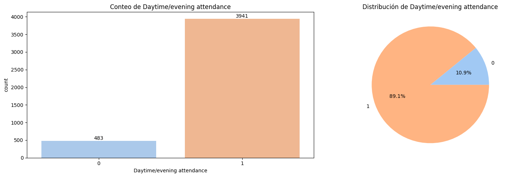
Column: Displaced
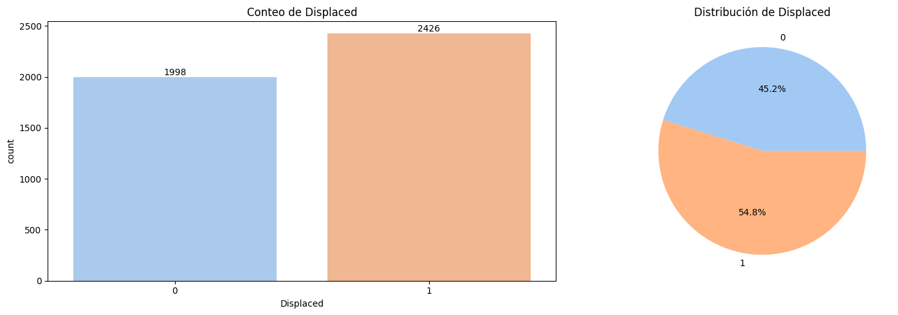
Column: Educational special needs
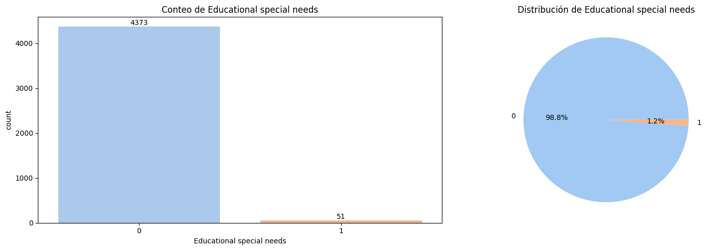
Column: Debtor
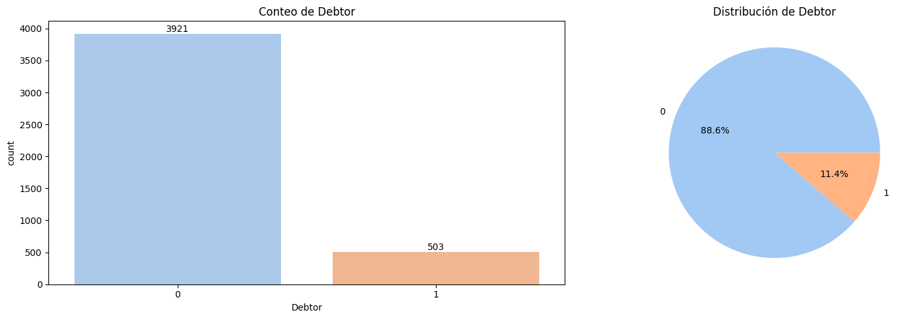
Column: Tuition fees up to date

Column: Gender

Column: Scholarship holder
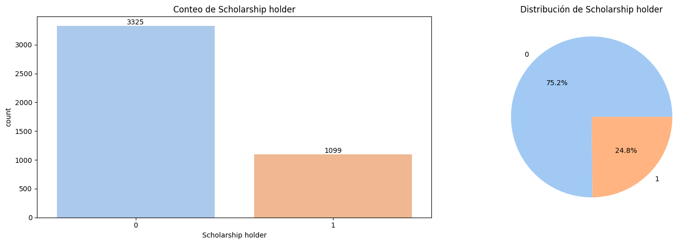
Column: International

Interpretación de las Variables Binarias
Las visualizaciones binarias del conjunto de datos, que incluyen gráficos de barras y circulares, revelan información clave sobre la composición de los estudiantes.
En primer lugar, la distribución de
Displacedes casi equitativa, con un ligero predominio de estudiantes que no están desplazados (54.8%), sugiriendo que la mayoría de los estudiantes no han sido reubicados para sus estudios.Por otro lado, la variable
Daytime/evening attendancemuestra un sesgo significativo hacia la asistencia diurna (89.1%), lo cual indica que la gran mayoría de los estudiantes está inscrita en programas de día.En cuanto a las variables financieras, la mayoría de los estudiantes no son deudores (88.6%) y una proporción similar (88.1%) tiene sus matrículas al día, lo que sugiere una población estudiantil mayoritariamente solvente.
Con respecto al género, la distribución es desequilibrada, con un 64.8% de estudiantes identificados con el género 0 (Mujer) y un 35.2% con el género 1 (Hombre).
Además, la mayoría de los estudiantes no son beneficiarios de becas (75.2%), lo que podría ser un factor de interés para futuros análisis.
Finalmente, las variables
Educational special needseInternationalmuestran distribuciones muy sesgadas, con solo un 1.2% y un 2.5% de estudiantes, respectivamente, en estas categorías. Esto indica que la población estudiantil es predominantemente local y no tiene necesidades educativas especiales, lo que debe ser considerado al analizar el impacto de estas variables.
Variables Categóricas#
A continuación, se presenta el análisis completo de frecuencias para cada variable categórica, mostrando:
Conteo absoluto de observaciones por categoría
Porcentaje relativo respecto al total
Ordenamiento descendente por frecuencia
categoricas = ["Marital Status", "Application mode", "Course", "Previous qualification", "Nacionality", "Mother's qualification",
"Father's qualification", "Mother's occupation", "Father's occupation"]
from IPython.display import display, HTML
def display_horizontal_table(df, variable, max_categories=50):
counts = df[variable].value_counts()
percentages = (counts / counts.sum() * 100).round(2)
# Limitar el número de categorías mostradas
counts = counts.head(max_categories)
percentages = percentages.head(max_categories)
# Crear el HTML
html = f"""
<h3>{variable} (Total categorías: {len(counts)})</h3>
<div style="width:100%; overflow-x:auto;">
<table border="1" style="border-collapse: collapse; width: auto;">
<tr>
<th>Metrica</th>
{"".join(f'<th>{cat}</th>' for cat in counts.index)}
</tr>
<tr>
<td><b>Conteo</b></td>
{"".join(f'<td>{count}</td>' for count in counts.values)}
</tr>
<tr>
<td><b>Porcentaje</b></td>
{"".join(f'<td>{perc}%</td>' for perc in percentages.values)}
</tr>
</table>
</div>
"""
display(HTML(html))
# Mostrar todas las variables categóricas
for variable in categoricas:
display_horizontal_table(df, variable)
Marital Status (Total categorías: 6)
| Metrica | 1 | 2 | 4 | 5 | 6 | 3 |
|---|---|---|---|---|---|---|
| Conteo | 3919 | 379 | 91 | 25 | 6 | 4 |
| Porcentaje | 88.58% | 8.57% | 2.06% | 0.57% | 0.14% | 0.09% |
Application mode (Total categorías: 18)
| Metrica | 1 | 17 | 39 | 43 | 44 | 7 | 18 | 42 | 51 | 16 | 53 | 15 | 5 | 10 | 2 | 57 | 26 | 27 |
|---|---|---|---|---|---|---|---|---|---|---|---|---|---|---|---|---|---|---|
| Conteo | 1708 | 872 | 785 | 312 | 213 | 139 | 124 | 77 | 59 | 38 | 35 | 30 | 16 | 10 | 3 | 1 | 1 | 1 |
| Porcentaje | 38.61% | 19.71% | 17.74% | 7.05% | 4.81% | 3.14% | 2.8% | 1.74% | 1.33% | 0.86% | 0.79% | 0.68% | 0.36% | 0.23% | 0.07% | 0.02% | 0.02% | 0.02% |
Course (Total categorías: 17)
| Metrica | 9500 | 9147 | 9238 | 9085 | 9773 | 9670 | 9991 | 9254 | 9070 | 171 | 8014 | 9003 | 9853 | 9119 | 9130 | 9556 | 33 |
|---|---|---|---|---|---|---|---|---|---|---|---|---|---|---|---|---|---|
| Conteo | 766 | 380 | 355 | 337 | 331 | 268 | 268 | 252 | 226 | 215 | 215 | 210 | 192 | 170 | 141 | 86 | 12 |
| Porcentaje | 17.31% | 8.59% | 8.02% | 7.62% | 7.48% | 6.06% | 6.06% | 5.7% | 5.11% | 4.86% | 4.86% | 4.75% | 4.34% | 3.84% | 3.19% | 1.94% | 0.27% |
Previous qualification (Total categorías: 17)
| Metrica | 1 | 39 | 19 | 3 | 12 | 40 | 42 | 2 | 6 | 9 | 4 | 38 | 43 | 10 | 15 | 5 | 14 |
|---|---|---|---|---|---|---|---|---|---|---|---|---|---|---|---|---|---|
| Conteo | 3717 | 219 | 162 | 126 | 45 | 40 | 36 | 23 | 16 | 11 | 8 | 7 | 6 | 4 | 2 | 1 | 1 |
| Porcentaje | 84.02% | 4.95% | 3.66% | 2.85% | 1.02% | 0.9% | 0.81% | 0.52% | 0.36% | 0.25% | 0.18% | 0.16% | 0.14% | 0.09% | 0.05% | 0.02% | 0.02% |
Nacionality (Total categorías: 21)
| Metrica | 1 | 41 | 26 | 22 | 6 | 24 | 100 | 11 | 103 | 21 | 101 | 62 | 25 | 2 | 105 | 32 | 13 | 109 | 108 | 14 | 17 |
|---|---|---|---|---|---|---|---|---|---|---|---|---|---|---|---|---|---|---|---|---|---|
| Conteo | 4314 | 38 | 14 | 13 | 13 | 5 | 3 | 3 | 3 | 2 | 2 | 2 | 2 | 2 | 2 | 1 | 1 | 1 | 1 | 1 | 1 |
| Porcentaje | 97.51% | 0.86% | 0.32% | 0.29% | 0.29% | 0.11% | 0.07% | 0.07% | 0.07% | 0.05% | 0.05% | 0.05% | 0.05% | 0.05% | 0.05% | 0.02% | 0.02% | 0.02% | 0.02% | 0.02% | 0.02% |
Mother's qualification (Total categorías: 29)
| Metrica | 1 | 37 | 19 | 38 | 3 | 34 | 2 | 4 | 12 | 5 | 40 | 9 | 39 | 41 | 6 | 42 | 43 | 29 | 10 | 11 | 36 | 35 | 30 | 14 | 18 | 22 | 27 | 26 | 44 |
|---|---|---|---|---|---|---|---|---|---|---|---|---|---|---|---|---|---|---|---|---|---|---|---|---|---|---|---|---|---|
| Conteo | 1069 | 1009 | 953 | 562 | 438 | 130 | 83 | 49 | 42 | 21 | 9 | 8 | 8 | 6 | 4 | 4 | 4 | 3 | 3 | 3 | 3 | 3 | 3 | 2 | 1 | 1 | 1 | 1 | 1 |
| Porcentaje | 24.16% | 22.81% | 21.54% | 12.7% | 9.9% | 2.94% | 1.88% | 1.11% | 0.95% | 0.47% | 0.2% | 0.18% | 0.18% | 0.14% | 0.09% | 0.09% | 0.09% | 0.07% | 0.07% | 0.07% | 0.07% | 0.07% | 0.07% | 0.05% | 0.02% | 0.02% | 0.02% | 0.02% | 0.02% |
Father's qualification (Total categorías: 34)
| Metrica | 37 | 19 | 1 | 38 | 3 | 34 | 2 | 4 | 12 | 39 | 5 | 11 | 36 | 9 | 40 | 22 | 30 | 14 | 29 | 35 | 41 | 43 | 10 | 6 | 26 | 25 | 27 | 33 | 44 | 20 | 42 | 18 | 13 | 31 |
|---|---|---|---|---|---|---|---|---|---|---|---|---|---|---|---|---|---|---|---|---|---|---|---|---|---|---|---|---|---|---|---|---|---|---|
| Conteo | 1209 | 968 | 904 | 702 | 282 | 112 | 68 | 39 | 38 | 20 | 18 | 10 | 8 | 5 | 5 | 4 | 4 | 4 | 3 | 2 | 2 | 2 | 2 | 2 | 2 | 1 | 1 | 1 | 1 | 1 | 1 | 1 | 1 | 1 |
| Porcentaje | 27.33% | 21.88% | 20.43% | 15.87% | 6.37% | 2.53% | 1.54% | 0.88% | 0.86% | 0.45% | 0.41% | 0.23% | 0.18% | 0.11% | 0.11% | 0.09% | 0.09% | 0.09% | 0.07% | 0.05% | 0.05% | 0.05% | 0.05% | 0.05% | 0.05% | 0.02% | 0.02% | 0.02% | 0.02% | 0.02% | 0.02% | 0.02% | 0.02% | 0.02% |
Mother's occupation (Total categorías: 32)
| Metrica | 9 | 4 | 5 | 3 | 2 | 7 | 0 | 1 | 6 | 90 | 8 | 191 | 99 | 194 | 141 | 123 | 144 | 175 | 192 | 193 | 134 | 10 | 143 | 151 | 132 | 152 | 122 | 153 | 173 | 125 | 131 | 171 |
|---|---|---|---|---|---|---|---|---|---|---|---|---|---|---|---|---|---|---|---|---|---|---|---|---|---|---|---|---|---|---|---|---|
| Conteo | 1577 | 817 | 530 | 351 | 318 | 272 | 144 | 102 | 91 | 70 | 36 | 26 | 17 | 11 | 8 | 7 | 6 | 5 | 5 | 4 | 4 | 4 | 3 | 3 | 3 | 2 | 2 | 2 | 1 | 1 | 1 | 1 |
| Porcentaje | 35.65% | 18.47% | 11.98% | 7.93% | 7.19% | 6.15% | 3.25% | 2.31% | 2.06% | 1.58% | 0.81% | 0.59% | 0.38% | 0.25% | 0.18% | 0.16% | 0.14% | 0.11% | 0.11% | 0.09% | 0.09% | 0.09% | 0.07% | 0.07% | 0.07% | 0.05% | 0.05% | 0.05% | 0.02% | 0.02% | 0.02% | 0.02% |
Father's occupation (Total categorías: 46)
| Metrica | 9 | 7 | 5 | 4 | 3 | 8 | 10 | 6 | 2 | 1 | 0 | 90 | 99 | 193 | 144 | 171 | 192 | 163 | 103 | 175 | 135 | 183 | 152 | 123 | 181 | 194 | 182 | 112 | 151 | 172 | 122 | 102 | 153 | 101 | 114 | 174 | 141 | 132 | 134 | 143 | 131 | 161 | 195 | 121 | 124 | 154 |
|---|---|---|---|---|---|---|---|---|---|---|---|---|---|---|---|---|---|---|---|---|---|---|---|---|---|---|---|---|---|---|---|---|---|---|---|---|---|---|---|---|---|---|---|---|---|---|
| Conteo | 1010 | 666 | 516 | 386 | 384 | 318 | 266 | 242 | 197 | 134 | 128 | 65 | 19 | 15 | 8 | 8 | 6 | 5 | 4 | 4 | 3 | 3 | 3 | 3 | 3 | 2 | 2 | 2 | 2 | 2 | 2 | 2 | 1 | 1 | 1 | 1 | 1 | 1 | 1 | 1 | 1 | 1 | 1 | 1 | 1 | 1 |
| Porcentaje | 22.83% | 15.05% | 11.66% | 8.73% | 8.68% | 7.19% | 6.01% | 5.47% | 4.45% | 3.03% | 2.89% | 1.47% | 0.43% | 0.34% | 0.18% | 0.18% | 0.14% | 0.11% | 0.09% | 0.09% | 0.07% | 0.07% | 0.07% | 0.07% | 0.07% | 0.05% | 0.05% | 0.05% | 0.05% | 0.05% | 0.05% | 0.05% | 0.02% | 0.02% | 0.02% | 0.02% | 0.02% | 0.02% | 0.02% | 0.02% | 0.02% | 0.02% | 0.02% | 0.02% | 0.02% | 0.02% |
Se generan gráficos de barras con las 10 categorías más dominantes dentro de cada variable categórica. Cada gráfico muestra:
El número absoluto de observaciones (conteo).
El porcentaje relativo respecto al total.
for col in categoricas:
# Obtener las 10 categorías con más conteos
top_categories = df[col].value_counts().nlargest(10)
# Crear el gráfico de barras
plt.figure(figsize=(16, 6))
ax = sns.countplot(
x=df[col],
order=top_categories.index,
palette='pastel'
)
# Añadir anotaciones
for p in ax.patches:
count = int(p.get_height())
percent = 100 * p.get_height() / len(df[col])
ax.annotate(
f'{count}\n({percent:.2f}%)',
(p.get_x() + p.get_width()/2., p.get_height()),
ha='center',
va='center',
xytext=(0, 5),
textcoords='offset points',
fontsize=10
)
plt.title(f'Top 10 categorías de {col} (de {df[col].nunique()} totales)')
plt.tight_layout()
plt.show()
print("Column: Target")
plt.figure(figsize=(16, 5))
# Definir el orden y los colores consistentes
value_order = sorted(df["Target"].unique())
colors = sns.color_palette('pastel') # Misma paleta para ambos gráficos
# Primer subplot - Gráfico de barras
plt.subplot(1, 2, 1)
ax = sns.countplot(x=df["Target"], palette=colors, order=value_order)
plt.title("Conteo de Target")
# Añadir los valores encima de las barras
for container in ax.containers:
ax.bar_label(container, fmt='%d', label_type='edge')
# Segundo subplot - Diagrama de torta
plt.subplot(1, 2, 2)
counts = df["Target"].value_counts().loc[value_order] # Ordenar los conteos
plt.pie(counts,
labels=counts.index,
autopct='%1.1f%%',
colors=colors) # Usar la misma paleta ordenada
plt.title("Distribución de Target")
plt.tight_layout()
plt.show()
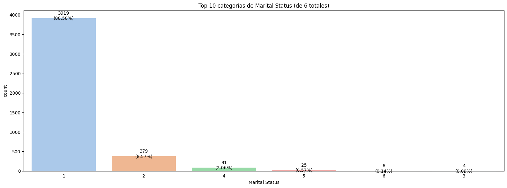
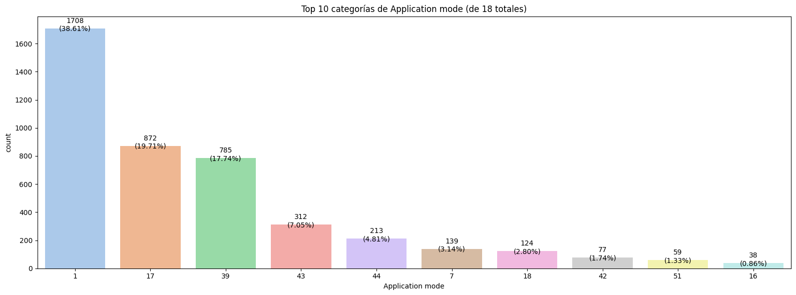

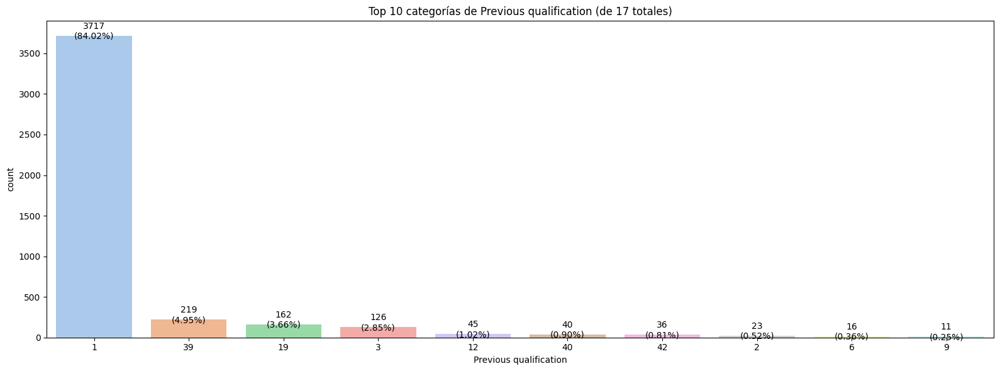

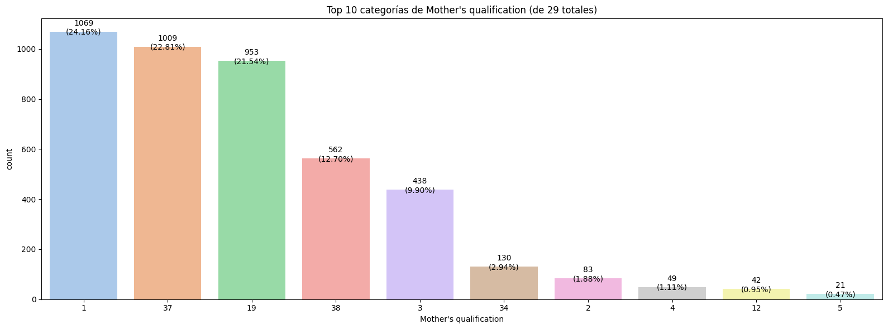
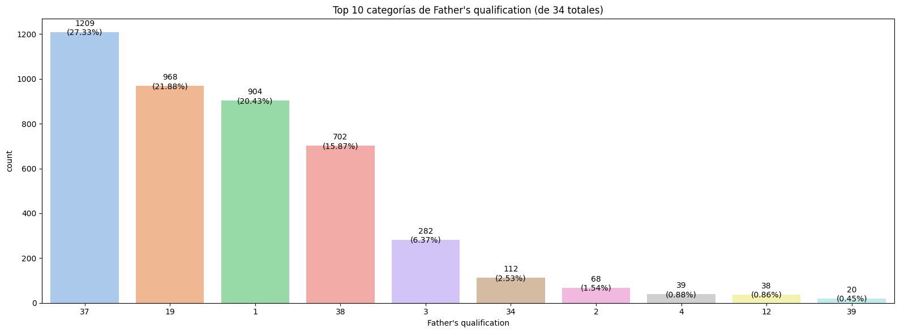
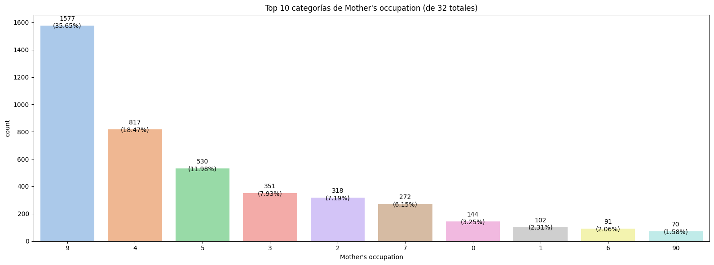

Column: Target
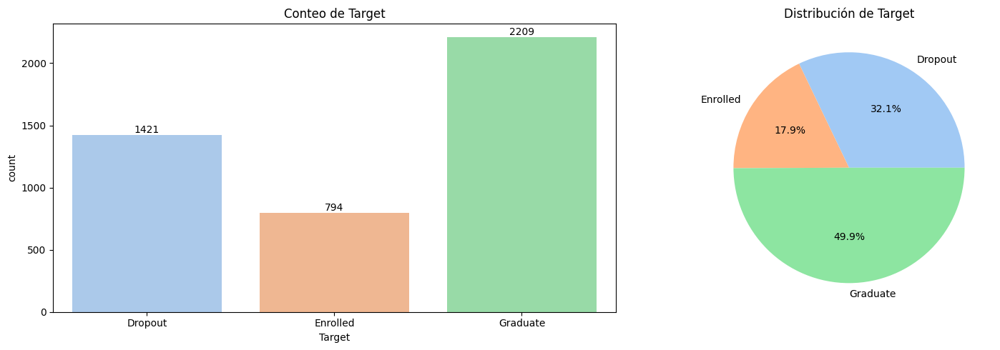
Interpretación de las variables Categóricas
La variable de resultado principal, Target, muestra que casi la mitad de los estudiantes (49.9%) se han graduado, mientras que una porción significativa ha abandonado (32.1%) y el 17.9% restante sigue matriculado. Esta distribución equilibrada convierte al conjunto de datos en una base ideal para un modelo predictivo que busque identificar a los estudiantes en riesgo de deserción.
En cuanto a los factores demográficos y educativos, la población estudiantil está fuertemente concentrada en una única nacionalidad (97.51% en la categoría 1 = Portuguese), lo que sugiere que los datos provienen de una región específica.
De manera similar, existe una prevalencia marcada de estudiantes con un solo estado civil (88.58% en la categoría 1 = Single) y una titulación previa dominante (84.02% en la categoría 1 = Secondary education).
Los cursos más comunes (como 9500 = Nursing y 9147 = Management) y los modos de solicitud (por ejemplo, 1 = 1st phase - general contingent, 17 = 2nd phase - general contingent y 39 = Over 23 years old) son muy específicos, lo que indica rutas de ingreso bien definidas.
Por último, los antecedentes educativos y ocupacionales de los padres también muestran una concentración en categorías específicas, con la titulación de la madre (1 = Secondary Education y 37 = Basic education 1st cycle (4th/5th year) or equiv.) siendo las más comunes, y las ocupaciones del padre (9 = Unskilled Workers y 7 = Skilled Workers in Industry, Construction and Craftsmen) destacando, lo que sugiere posibles patrones socioeconómicos dentro de la población estudiantil.
Variables Númericas#
A continuación, Se genera una tabla para visualizar algunos estadísticos descriptivos para las variables númericas.
numericas = ["Application order", "Previous qualification (grade)", "Admission grade", "Age at enrollment",
"Curricular units 1st sem (credited)", "Curricular units 1st sem (enrolled)", "Curricular units 1st sem (evaluations)",
"Curricular units 1st sem (approved)", "Curricular units 1st sem (grade)", "Curricular units 1st sem (without evaluations)",
"Curricular units 2nd sem (credited)", "Curricular units 2nd sem (enrolled)", "Curricular units 2nd sem (evaluations)",
"Curricular units 2nd sem (approved)", "Curricular units 2nd sem (grade)", "Curricular units 2nd sem (without evaluations)",
"Unemployment rate", "Inflation rate", "GDP"]
df[numericas].describe().T
| count | mean | std | min | 25% | 50% | 75% | max | |
|---|---|---|---|---|---|---|---|---|
| Application order | 4424.0 | 1.727848 | 1.313793 | 0.00 | 1.00 | 1.000000 | 2.000000 | 9.000000 |
| Previous qualification (grade) | 4424.0 | 132.613314 | 13.188332 | 95.00 | 125.00 | 133.100000 | 140.000000 | 190.000000 |
| Admission grade | 4424.0 | 126.978119 | 14.482001 | 95.00 | 117.90 | 126.100000 | 134.800000 | 190.000000 |
| Age at enrollment | 4424.0 | 23.265145 | 7.587816 | 17.00 | 19.00 | 20.000000 | 25.000000 | 70.000000 |
| Curricular units 1st sem (credited) | 4424.0 | 0.709991 | 2.360507 | 0.00 | 0.00 | 0.000000 | 0.000000 | 20.000000 |
| Curricular units 1st sem (enrolled) | 4424.0 | 6.270570 | 2.480178 | 0.00 | 5.00 | 6.000000 | 7.000000 | 26.000000 |
| Curricular units 1st sem (evaluations) | 4424.0 | 8.299051 | 4.179106 | 0.00 | 6.00 | 8.000000 | 10.000000 | 45.000000 |
| Curricular units 1st sem (approved) | 4424.0 | 4.706600 | 3.094238 | 0.00 | 3.00 | 5.000000 | 6.000000 | 26.000000 |
| Curricular units 1st sem (grade) | 4424.0 | 10.640822 | 4.843663 | 0.00 | 11.00 | 12.285714 | 13.400000 | 18.875000 |
| Curricular units 1st sem (without evaluations) | 4424.0 | 0.137658 | 0.690880 | 0.00 | 0.00 | 0.000000 | 0.000000 | 12.000000 |
| Curricular units 2nd sem (credited) | 4424.0 | 0.541817 | 1.918546 | 0.00 | 0.00 | 0.000000 | 0.000000 | 19.000000 |
| Curricular units 2nd sem (enrolled) | 4424.0 | 6.232143 | 2.195951 | 0.00 | 5.00 | 6.000000 | 7.000000 | 23.000000 |
| Curricular units 2nd sem (evaluations) | 4424.0 | 8.063291 | 3.947951 | 0.00 | 6.00 | 8.000000 | 10.000000 | 33.000000 |
| Curricular units 2nd sem (approved) | 4424.0 | 4.435805 | 3.014764 | 0.00 | 2.00 | 5.000000 | 6.000000 | 20.000000 |
| Curricular units 2nd sem (grade) | 4424.0 | 10.230206 | 5.210808 | 0.00 | 10.75 | 12.200000 | 13.333333 | 18.571429 |
| Curricular units 2nd sem (without evaluations) | 4424.0 | 0.150316 | 0.753774 | 0.00 | 0.00 | 0.000000 | 0.000000 | 12.000000 |
| Unemployment rate | 4424.0 | 11.566139 | 2.663850 | 7.60 | 9.40 | 11.100000 | 13.900000 | 16.200000 |
| Inflation rate | 4424.0 | 1.228029 | 1.382711 | -0.80 | 0.30 | 1.400000 | 2.600000 | 3.700000 |
| GDP | 4424.0 | 0.001969 | 2.269935 | -4.06 | -1.70 | 0.320000 | 1.790000 | 3.510000 |
Interpretación de las Variables Númericas
Basado en el resumen estadístico de las variables númericas, podemos observar varias tendencias clave.
La edad promedio de los estudiantes al matricularse es de aproximadamente 23.27 años, con una desviación estándar considerable, lo que indica una amplia dispersión de edades en la población estudiantil.
En cuanto a las calificaciones, tanto la calificación de admisión como la calificación de la titulación previa tienen medias elevadas (126.98 y 132.61 respectivamente), lo que sugiere que los estudiantes ingresan con un buen rendimiento académico previo.
Las métricas de desempeño del primer y segundo semestre muestran un comportamiento similar: la media de unidades curriculares aprobadas es de aproximadamente 4.71 en el primer semestre y 4.44 en el segundo, con un promedio de calificaciones de alrededor de 10.64 y 10.23, respectivamente. Esto indica que el rendimiento académico se mantiene relativamente constante entre ambos semestres, aunque con una ligera disminución.
Es notable que la media de unidades curriculares sin evaluaciones es muy baja en ambos semestres, lo que sugiere una alta tasa de participación en los exámenes.
Finalmente, los indicadores socioeconómicos muestran una tasa de desempleo promedio del 11.57%, una tasa de inflación del 1.23% y un GDP promedio de 0.002, lo que contextualiza el entorno económico en el que se encuentran los estudiantes.
Se generan histogramas y boxplots para visualizar la distribución de frecuencias e identificar outliers (puntos fuera de los bigotes) y la dispersión de los datos. Además se evalua:
Asimetría:
skew = 0: Distribución simétrica (valores aceptables skew \(\in (-1,1)\)).skew > 0: Mayor peso en la cola izquierda de la distribución (sesgo positivo).skew < 0: Mayor peso en la cola derecha de la distribución (sesgo negativo).
Kurtosis: Determina si una distribución tiene colas gruesas con respecto a la distribución normal. Proporciona información sobre la forma de una distribución de frecuencias.
kurtosis = 3: se denomina mesocúrtica (distribución normal).kurtosis < 3: se denomina platicúrtica (distribución con colas menos gruesas que la normal).kurtosis > 3: se denomina leptocúrtica (distribución con colas más gruesas que la normal) y significa que trata de producir más valores atípicos que la distribución normal.
Coeficiente de Variación: es una medida estadística que se utiliza para evaluar la variabilidad relativa de una muestra o población en relación con su media. Se calcula como la desviación estándar de los datos dividida por la media, y se expresa como un porcentaje multiplicado por 100 para facilitar su interpretación.
from scipy.stats import kurtosis
def coeficiente_variacion(data):
return np.std(data) / np.mean(data)
for col in numericas:
print('Column:', col)
plt.figure(figsize=(16, 6))
print('Skew:', round(df[col].skew(), 2))
print('Kurtosis: ', round(df[col].kurtosis(), 2))
cv = coeficiente_variacion(df[col])
print(f"Coeficiente de variación: {cv:.2f}")
plt.subplot(1, 2, 1)
df[col].hist(grid=False)
plt.title(f'Distribución de {col}')
plt.subplot(1, 2, 2)
sns.boxplot(x=df[col])
plt.title(f'Distribución de {col}')
plt.tight_layout()
plt.show()
Column: Application order
Skew: 1.88
Kurtosis: 2.65
Coeficiente de variación: 0.76

Column: Previous qualification (grade)
Skew: 0.31
Kurtosis: 0.97
Coeficiente de variación: 0.10
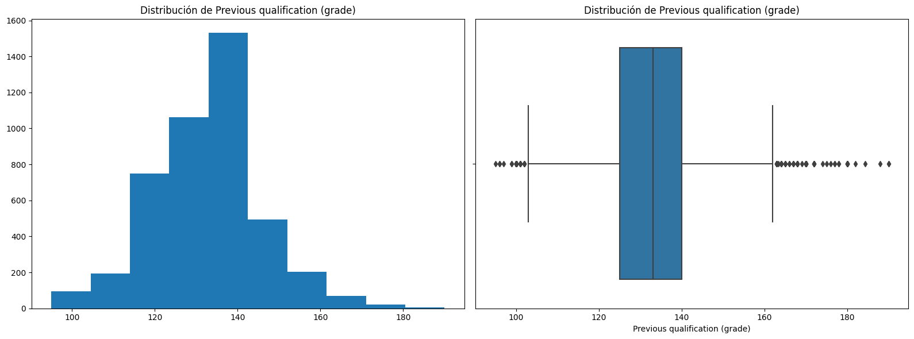
Column: Admission grade
Skew: 0.53
Kurtosis: 0.66
Coeficiente de variación: 0.11
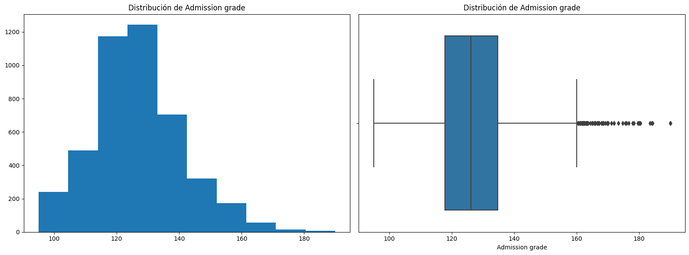
Column: Age at enrollment
Skew: 2.05
Kurtosis: 4.13
Coeficiente de variación: 0.33

Column: Curricular units 1st sem (credited)
Skew: 4.17
Kurtosis: 19.21
Coeficiente de variación: 3.32

Column: Curricular units 1st sem (enrolled)
Skew: 1.62
Kurtosis: 8.94
Coeficiente de variación: 0.40
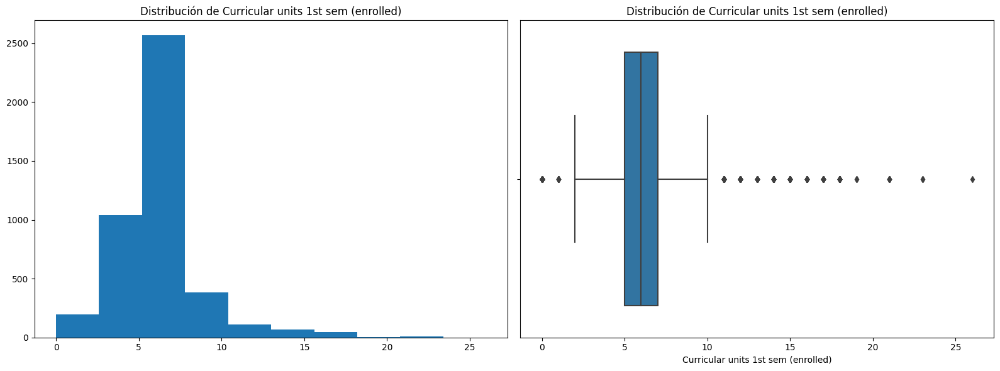
Column: Curricular units 1st sem (evaluations)
Skew: 0.98
Kurtosis: 5.46
Coeficiente de variación: 0.50

Column: Curricular units 1st sem (approved)
Skew: 0.77
Kurtosis: 3.1
Coeficiente de variación: 0.66
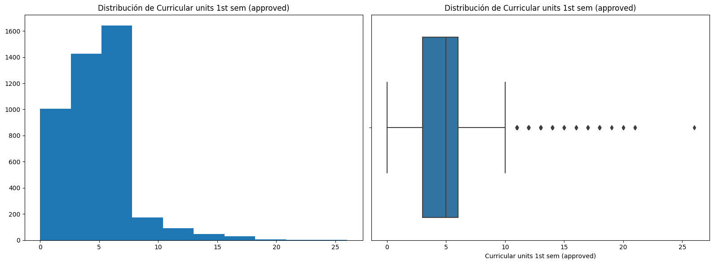
Column: Curricular units 1st sem (grade)
Skew: -1.57
Kurtosis: 0.91
Coeficiente de variación: 0.46
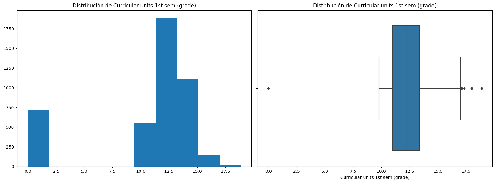
Column: Curricular units 1st sem (without evaluations)
Skew: 8.21
Kurtosis: 89.86
Coeficiente de variación: 5.02

Column: Curricular units 2nd sem (credited)
Skew: 4.63
Kurtosis: 24.43
Coeficiente de variación: 3.54
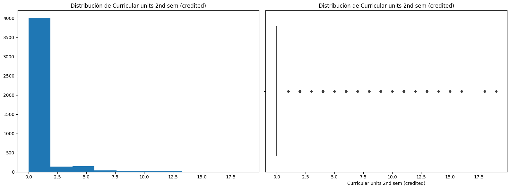
Column: Curricular units 2nd sem (enrolled)
Skew: 0.79
Kurtosis: 7.13
Coeficiente de variación: 0.35
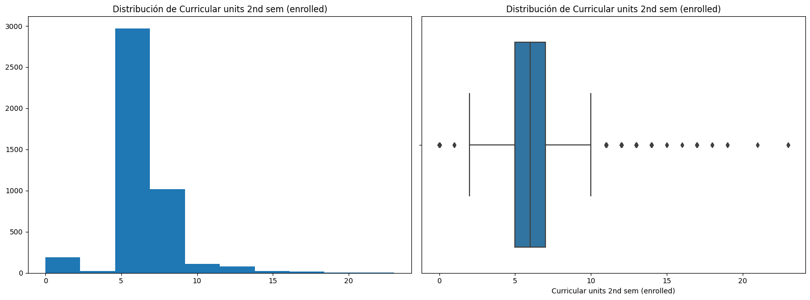
Column: Curricular units 2nd sem (evaluations)
Skew: 0.34
Kurtosis: 2.07
Coeficiente de variación: 0.49
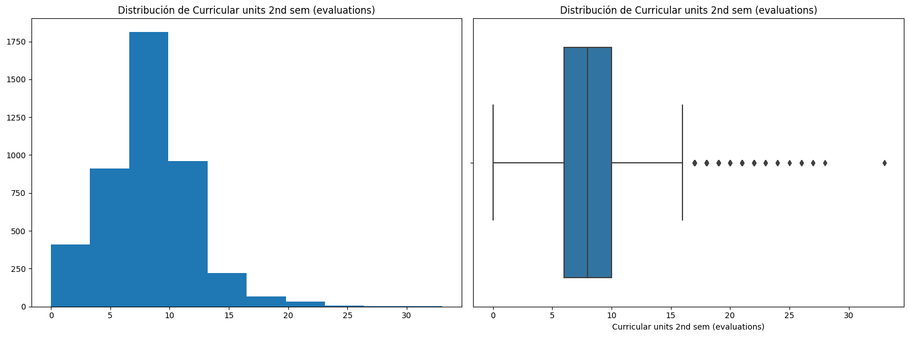
Column: Curricular units 2nd sem (approved)
Skew: 0.31
Kurtosis: 0.85
Coeficiente de variación: 0.68

Column: Curricular units 2nd sem (grade)
Skew: -1.31
Kurtosis: 0.07
Coeficiente de variación: 0.51
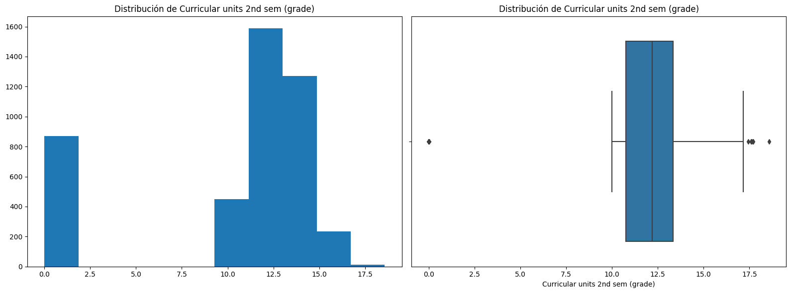
Column: Curricular units 2nd sem (without evaluations)
Skew: 7.27
Kurtosis: 66.81
Coeficiente de variación: 5.01

Column: Unemployment rate
Skew: 0.21
Kurtosis: -1.0
Coeficiente de variación: 0.23

Column: Inflation rate
Skew: 0.25
Kurtosis: -1.04
Coeficiente de variación: 1.13

Column: GDP
Skew: -0.39
Kurtosis: -1.0
Coeficiente de variación: 1152.82

Interpretación de las Variables Númericas
Las variables de calificación, como la calificación de admisión y la calificación de la titulación previa, presentan distribuciones que se asemejan a una campana, con la mayoría de los estudiantes concentrados en rangos de notas altos, lo que indica un fuerte rendimiento académico al ingresar.
Sin embargo, otras variables como la edad al matricularse y el orden de la solicitud muestran una fuerte asimetría positiva, lo que significa que la mayoría de los estudiantes son jóvenes y solicitaron su ingreso en su primera o segunda opción, pero existe una larga cola de casos atípicos (estudiantes mayores o que aplicaron en un orden superior).
En el ámbito académico, la distribución de las unidades curriculares acreditadas y sin evaluaciones está muy sesgada hacia cero, lo que sugiere que la mayoría de los estudiantes no tienen unidades previas acreditadas ni unidades que queden sin evaluar en el primer semestre.
Las variables de desempeño, como las unidades inscritas, evaluadas y aprobadas, también muestran asimetría positiva, indicando que aunque la mayoría de los estudiantes se encuentran en un rango estándar, existen casos de estudiantes con una carga académica significativamente mayor.
La distribución de la calificación promedio del 1er semestre es particularmente interesante, ya que presenta un sesgo negativo y una concentración de valores alrededor de la media, pero también un pico notable en los valores bajos, lo que podría indicar un grupo de estudiantes con un rendimiento inicial muy bajo, posiblemente relacionado con los abandonos.
En cuanto al segundo semestre, las distribuciones de las variables continúan reflejando patrones similares a los del primer semestre, con algunas peculiaridades.
La calificación promedio del segundo semestre exhibe un comportamiento bimodal o una asimetría negativa con un pico notable en las calificaciones bajas (cerca de cero) y otro pico más pronunciado en un rango alto, lo que podría indicar una polarización en el rendimiento académico.
Las variables de carga académica, como las unidades curriculares inscritas, evaluadas y aprobadas, tienen una asimetría positiva que sugiere que la mayoría de los estudiantes se inscriben en un número de cursos dentro de un rango típico, pero hay una minoría con cargas académicas muy altas.
Por su parte, la distribución de unidades acreditadas y sin evaluaciones está fuertemente sesgada hacia el cero, lo que confirma que la mayoría de los estudiantes no arrastran créditos ni dejan asignaturas sin evaluar.
Finalmente, los indicadores macroeconómicos como la tasa de desempleo, la tasa de inflación y el GDP presentan distribuciones más dispersas y con múltiples picos (multimodales), lo que podría reflejar fluctuaciones temporales en las condiciones económicas que contextualizan el periodo de estudio.
Análisis Bivariado#
El análisis bivariado es la segunda fase del análisis exploratorio de datos. Se enfoca en las relaciones entre dos variables para obtener datos estadísticos sobre sus influencias mutuas.
Se generan graficos de barras para analizar la relación entre el conjunto de variables binarias y la variable objetivo (tres categorías (abandono, matriculado y graduado)) al final de la duración normal del curso con el fin de identificar qué variables binarias están asociadas en mayores proporciones.
# Configuración del gráfico
n_vars = len(binarias)
fig, axes = plt.subplots(n_vars, 1, figsize=(16, 5*n_vars))
objetivo = "Target"
for i, var in enumerate(binarias):
pd.crosstab(df[var], df[objetivo], normalize='index').plot(
kind='bar', stacked=True, ax=axes[i],
title=f'Distribución (%) de {objetivo} por {var}'
)
plt.tight_layout()
plt.show()

Interpretación
Las visualizaciones de la distribución de la variable objetivo por categorías binarias revelan relaciones importantes entre las características de los estudiantes y sus resultados académicos.
Se observa una correlación muy fuerte entre las variables financieras y el resultado final: los estudiantes que son deudores o que no tienen sus matrículas al día presentan tasas de abandono significativamente más altas y tasas de graduación notablemente más bajas en comparación con sus contrapartes.
De manera similar, los becarios tienen una probabilidad de graduación considerablemente mayor y una tasa de abandono mucho menor.
Por otro lado, la asistencia diurna/nocturna y el género parecen tener una influencia menor, aunque el género femenino muestran tasas de graduación ligeramente más altas.
Por último, variables como el estatus de desplazamiento, las necesidades educativas especiales y el estatus de estudiante internacional no muestran diferencias notables en la distribución de los resultados académicos, lo que sugiere que estas características no son factores predictores fuertes del abandono, la graduación o la continuidad en los estudios.
Se generan graficos de barras para analizar la relación entre el conjunto de variables categóricas y la variable objetivo (tres categorías (abandono, matriculado y graduado)) al final de la duración normal del curso con el fin de identificar qué variables categóricas están asociadas en mayores proporciones.
# Configuración del gráfico
n_vars = len(categoricas)
fig, axes = plt.subplots(n_vars, 1, figsize=(16, 5*n_vars))
objetivo = "Target"
for i, col in enumerate(categoricas):
# Obtener las 10 categorías con más conteos
top_categories = df[col].value_counts().nlargest(10).index
# Filtrar el dataframe para incluir solo las top 10 categorías
df_filtered = df[df[col].isin(top_categories)]
pd.crosstab(df_filtered[col], df_filtered[objetivo], normalize='index').plot(
kind='bar',
stacked=True,
ax=axes[i],
title=f'Distribución de {objetivo} por {col} (Top 10 categorías)',
color=['#1f77b4', '#ff7f0e', '#2ca02c']
)
axes[i].tick_params(axis='x', rotation=45)
plt.tight_layout()
plt.show()
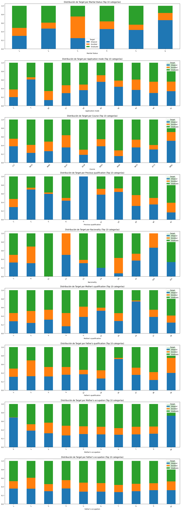
Interpretación
Las visualizaciones de la distribución de la variable objetivo en las principales categorías de diversas variables revelan que, si bien la mayoría de las características no muestran una correlación drástica, existen algunas diferencias notables.
La distribución de los resultados (Abandono, Matriculado, Graduado) parece ser bastante consistente a través de la mayoría de las categorías de Estado Civil, Modo de Solicitud, Nacionalidad, Ocupación de la Madre y Ocupación del Padre. Esto sugiere que la categoría específica dentro de estas variables no es un predictor fuerte y aislado del éxito académico.
Sin embargo, la variable Curso muestra una mayor variación; algunas de las categorías de cursos principales tienen una proporción de graduados visiblemente más alta que otras, lo que implica que el campo de estudio elegido podría ser un factor influyente en el resultado del estudiante.
En la mayoria de variables categóricas sucede una inconsistencia en el porcentaje de (Dropout, Enrolled, Graduate) esto se debe a la concentración de la mayoria de los datos en unas pocas categorías, lo que provoca cambios bruscos en la proporción de la variable objetivo con respecto a la variable categórica estudiada. Por ejemplo, en una categoría en específico dentro de una variable puede registrarse que el 60% de las pocas muestras han abandonado, mientras que en la siguiente categoría el 30% ha abandonado por lo tanto la proporción caería considerablemente. Este fenómeno refleja una la alta variabilidad en categorías con baja densidad de muestras, lo que dificulta la interpretación de tendencias.
Se generan graficos cajas y bigotes para analizar la relación entre el conjunto de variables númericas y la variable objetivo (tres categorías (abandono, matriculado y graduado)) al final de la duración normal del curso con el fin de identificar qué variables númericas están asociadas en mayores proporciones y verificar sus distribuciones.
# Configuración
n_vars = len(numericas)
fig, axes = plt.subplots(n_vars, 1, figsize=(16, 5*n_vars))
objetivo = "Target"
for i, var in enumerate(numericas):
sns.boxplot(
data=df,
x=objetivo,
y=var,
ax=axes[i],
palette=['#1f77b4', '#ff7f0e', '#2ca02c'],
showmeans=True,
meanprops={"marker":"o","markerfacecolor":"white","markeredgecolor":"black"}
)
axes[i].set_title(f'Distribución de {var} por {objetivo}')
axes[i].grid(True, linestyle='--', alpha=0.3)
plt.tight_layout()
plt.show()
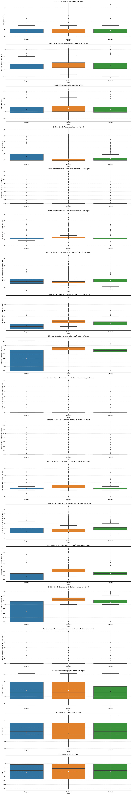
Se generan histogramas para analizar la relación entre el conjunto de variables númericas y la variable objetivo (tres categorías (abandono, matriculado y graduado)) al final de la duración normal del curso con el fin de identificar qué variables númericas están asociadas en mayores proporciones y verificar sus distribuciones.
# Configuración
fig, axes = plt.subplots(n_vars, 1, figsize=(16, 5*n_vars))
objetivo = "Target"
for i, var in enumerate(numericas):
# Crear histograma apilado
df.groupby(objetivo)[var].plot(
kind='hist',
bins=30,
alpha=0.6,
ax=axes[i],
legend=True,
stacked=True
)
axes[i].set_title(f'Distribución de {var} por {objetivo}')
axes[i].grid(True, linestyle='--', alpha=0.3)
axes[i].legend(title=objetivo)
plt.tight_layout()
plt.show()

Análisis Multivariado#
Para identificar relaciones lineales entre las variables del Dataset, se generó una matriz de correlación mediante un heatmap. Este gráfico muestra el coeficiente de correlación de Pearson (rango: -1 a 1) entre cada par de variables, utilizando una escala de colores (azul para correlaciones negativas, rojo para positivas). Los valores numéricos anotados permiten evaluar posibles dependencias entre variables.
from sklearn.preprocessing import OneHotEncoder
def plot_enhanced_heatmap(data, numeric_vars=[], binary_vars=[], categorical_vars=[], figsize=(30, 30)):
df = data.copy()
if categorical_vars:
categorical_vars = [cat for cat in categorical_vars if df[cat].nunique() < 10]
encoder = OneHotEncoder(drop='first', sparse_output=False)
encoded_cats = encoder.fit_transform(df[categorical_vars])
encoded_cols = encoder.get_feature_names_out(categorical_vars)
encoded_df = pd.DataFrame(encoded_cats, columns=encoded_cols, index=df.index)
df = pd.concat([df.drop(columns=categorical_vars), encoded_df], axis=1)
all_vars = numeric_vars + binary_vars + (list(encoded_cols) if categorical_vars else [])
corr_matrix = df[all_vars].corr()
plt.figure(figsize=figsize)
n_vars = len(all_vars)
line_width = 0.5 if n_vars < 30 else 0.3
font_size = max(6, 12 - int(n_vars/15))
sns.heatmap(
corr_matrix,
annot=True,
fmt=".1f",
cmap="coolwarm",
vmin=-1,
vmax=1,
linewidths=line_width,
linecolor='white',
square=True,
cbar_kws={"shrink": 0.75, "aspect": 10},
annot_kws={"size": font_size}
)
plt.title("Matriz de Correlación", pad=20, fontsize=16)
plt.xticks(rotation=45, ha='right', fontsize=font_size)
plt.yticks(rotation=0, fontsize=font_size)
plt.tight_layout()
plt.show()
plot_enhanced_heatmap(df,numericas,binarias,categoricas)

Interpretación
Observando la matriz, se puede apreciar que la mayoría de las variables muestran correlaciones débiles, con valores cercanos a cero. Sin embargo, hay algunas excepciones notables. Por ejemplo, las variables relacionadas con el Curricular units (“unidades curriculares”) parecen estar fuertemente correlacionadas entre sí. Específicamente, hay un bloque prominente de correlaciones positivas y fuertes entre las variables Curricular units 1st sem (approved), Curricular units 1st sem (grade) y Curricular units 1st sem (evaluations). Esto sugiere que el rendimiento en la primera mitad del semestre está altamente relacionado entre sí. De manera similar, las variables Curricular units 2nd sem... también muestran un patrón similar de fuertes correlaciones positivas.
Por otro lado, se observan algunas correlaciones negativas. Por ejemplo, la variable Unemployment rate parece tener una correlación negativa débil con varias otras variables. En resumen, la matriz de correlación indica que, si bien la mayoría de las variables no tienen una fuerte relación lineal, hay un grupo de variables relacionadas con las unidades curriculares que sí están fuertemente interconectadas, lo que es un hallazgo importante para el análisis de los datos.
A continuación, se muestra una tabla con los resultados de un Análisis de Varianza (ANOVA) unidireccional que compara cada variable numérica con una variable categórica de destino (‘Target’). El ANOVA se utiliza para determinar si existen diferencias estadísticamente significativas entre las medias de dos o más grupos. La tabla está ordenada de mayor a menor según el valor del estadístico F, que mide la diferencia entre las varianzas de los grupos. Un valor F más alto, junto con un valor p bajo, indica que las medias de los grupos son significativamente diferentes.
from statsmodels.stats.multicomp import pairwise_tukeyhsd
results = []
for col in numericas:
groups = [df[col][df['Target'] == category] for category in df['Target'].unique()]
f_stat, p_value = stats.f_oneway(*groups)
results.append({
'Variable': col,
'F-statistic': f_stat,
'p-value': p_value,
'Significativa (p < 0.05)': p_value < 0.05
})
# 3. Resultados ANOVA (ordenados por p-value)
results_df = pd.DataFrame(results).sort_values(by='p-value')
print("Resultados ANOVA:")
print(results_df)
# 4. Post-hoc Tukey HSD (solo si ANOVA es significativo)
if any(results_df['Significativa (p < 0.05)']):
print("\n--- Análisis Post-Hoc (Tukey HSD) ---")
for col in results_df[results_df['Significativa (p < 0.05)']]['Variable']:
print(f"\nVariable: {col}")
tukey = pairwise_tukeyhsd(endog=df[col], groups=df['Target'], alpha=0.05)
print(tukey.summary())
Resultados ANOVA:
Variable F-statistic \
14 Curricular units 2nd sem (grade) 1134.109544
13 Curricular units 2nd sem (approved) 1410.732938
7 Curricular units 1st sem (approved) 859.866768
8 Curricular units 1st sem (grade) 713.517328
3 Age at enrollment 154.712071
12 Curricular units 2nd sem (evaluations) 87.801092
11 Curricular units 2nd sem (enrolled) 75.591910
5 Curricular units 1st sem (enrolled) 59.467391
6 Curricular units 1st sem (evaluations) 37.527840
2 Admission grade 35.648604
1 Previous qualification (grade) 27.728589
15 Curricular units 2nd sem (without evaluations) 20.185531
0 Application order 19.727174
9 Curricular units 1st sem (without evaluations) 11.437319
10 Curricular units 2nd sem (credited) 9.974542
4 Curricular units 1st sem (credited) 7.979355
16 Unemployment rate 5.922513
18 GDP 4.799009
17 Inflation rate 1.741990
p-value Significativa (p < 0.05)
14 0.000000e+00 True
13 0.000000e+00 True
7 3.649472e-316 True
8 2.803052e-269 True
3 1.138849e-65 True
12 4.039137e-38 True
11 5.244430e-33 True
5 3.272852e-26 True
6 6.897115e-17 True
2 4.380466e-16 True
1 1.077783e-12 True
15 1.876375e-09 True
0 2.955293e-09 True
9 1.110815e-05 True
10 4.762728e-05 True
4 3.474158e-04 True
16 2.699757e-03 True
18 8.280870e-03 True
17 1.752917e-01 False
--- Análisis Post-Hoc (Tukey HSD) ---
Variable: Curricular units 2nd sem (grade)
Multiple Comparison of Means - Tukey HSD, FWER=0.05
=====================================================
group1 group2 meandiff p-adj lower upper reject
-----------------------------------------------------
Dropout Enrolled 5.218 0.0 4.7779 5.6582 True
Dropout Graduate 6.7979 0.0 6.4601 7.1358 True
Enrolled Graduate 1.5799 0.0 1.1689 1.991 True
-----------------------------------------------------
Variable: Curricular units 2nd sem (approved)
Multiple Comparison of Means - Tukey HSD, FWER=0.05
=====================================================
group1 group2 meandiff p-adj lower upper reject
-----------------------------------------------------
Dropout Enrolled 2.1178 0.0 1.873 2.3625 True
Dropout Graduate 4.2368 0.0 4.049 4.4247 True
Enrolled Graduate 2.1191 0.0 1.8905 2.3476 True
-----------------------------------------------------
Variable: Curricular units 1st sem (approved)
Multiple Comparison of Means - Tukey HSD, FWER=0.05
=====================================================
group1 group2 meandiff p-adj lower upper reject
-----------------------------------------------------
Dropout Enrolled 1.7669 0.0 1.4941 2.0397 True
Dropout Graduate 3.6805 0.0 3.4711 3.8899 True
Enrolled Graduate 1.9136 0.0 1.6588 2.1683 True
-----------------------------------------------------
Variable: Curricular units 1st sem (grade)
Multiple Comparison of Means - Tukey HSD, FWER=0.05
=====================================================
group1 group2 meandiff p-adj lower upper reject
-----------------------------------------------------
Dropout Enrolled 3.8686 0.0 3.431 4.3062 True
Dropout Graduate 5.387 0.0 5.0512 5.7228 True
Enrolled Graduate 1.5184 0.0 1.1098 1.927 True
-----------------------------------------------------
Variable: Age at enrollment
Multiple Comparison of Means - Tukey HSD, FWER=0.05
========================================================
group1 group2 meandiff p-adj lower upper reject
--------------------------------------------------------
Dropout Enrolled -3.6999 0.0 -4.4621 -2.9378 True
Dropout Graduate -4.2854 0.0 -4.8703 -3.7004 True
Enrolled Graduate -0.5854 0.1309 -1.2972 0.1264 False
--------------------------------------------------------
Variable: Curricular units 2nd sem (evaluations)
Multiple Comparison of Means - Tukey HSD, FWER=0.05
=======================================================
group1 group2 meandiff p-adj lower upper reject
-------------------------------------------------------
Dropout Enrolled 2.2619 0.0 1.8597 2.6642 True
Dropout Graduate 0.9683 0.0 0.6596 1.2771 True
Enrolled Graduate -1.2936 0.0 -1.6693 -0.9179 True
-------------------------------------------------------
Variable: Curricular units 2nd sem (enrolled)
Multiple Comparison of Means - Tukey HSD, FWER=0.05
=======================================================
group1 group2 meandiff p-adj lower upper reject
-------------------------------------------------------
Dropout Enrolled 0.1579 0.2251 -0.0665 0.3822 False
Dropout Graduate 0.8479 0.0 0.6757 1.0201 True
Enrolled Graduate 0.6901 0.0 0.4805 0.8996 True
-------------------------------------------------------
Variable: Curricular units 1st sem (enrolled)
Multiple Comparison of Means - Tukey HSD, FWER=0.05
=======================================================
group1 group2 meandiff p-adj lower upper reject
-------------------------------------------------------
Dropout Enrolled 0.1435 0.3825 -0.1108 0.3978 False
Dropout Graduate 0.8483 0.0 0.6531 1.0435 True
Enrolled Graduate 0.7048 0.0 0.4673 0.9423 True
-------------------------------------------------------
Variable: Curricular units 1st sem (evaluations)
Multiple Comparison of Means - Tukey HSD, FWER=0.05
========================================================
group1 group2 meandiff p-adj lower upper reject
--------------------------------------------------------
Dropout Enrolled 1.5897 0.0 1.1591 2.0203 True
Dropout Graduate 0.525 0.0006 0.1945 0.8555 True
Enrolled Graduate -1.0647 0.0 -1.4668 -0.6626 True
--------------------------------------------------------
Variable: Admission grade
Multiple Comparison of Means - Tukey HSD, FWER=0.05
=======================================================
group1 group2 meandiff p-adj lower upper reject
-------------------------------------------------------
Dropout Enrolled 0.5729 0.6405 -0.9198 2.0656 False
Dropout Graduate 3.8331 0.0 2.6874 4.9787 True
Enrolled Graduate 3.2602 0.0 1.8661 4.6542 True
-------------------------------------------------------
Variable: Previous qualification (grade)
Multiple Comparison of Means - Tukey HSD, FWER=0.05
=======================================================
group1 group2 meandiff p-adj lower upper reject
-------------------------------------------------------
Dropout Enrolled 0.0944 0.9856 -1.2674 1.4562 False
Dropout Graduate 2.9686 0.0 1.9235 4.0138 True
Enrolled Graduate 2.8743 0.0 1.6025 4.146 True
-------------------------------------------------------
Variable: Curricular units 2nd sem (without evaluations)
Multiple Comparison of Means - Tukey HSD, FWER=0.05
========================================================
group1 group2 meandiff p-adj lower upper reject
--------------------------------------------------------
Dropout Enrolled -0.0502 0.2864 -0.1282 0.0278 False
Dropout Graduate -0.1573 0.0 -0.2171 -0.0974 True
Enrolled Graduate -0.1071 0.0017 -0.1799 -0.0343 True
--------------------------------------------------------
Variable: Application order
Multiple Comparison of Means - Tukey HSD, FWER=0.05
=======================================================
group1 group2 meandiff p-adj lower upper reject
-------------------------------------------------------
Dropout Enrolled 0.0327 0.8392 -0.1032 0.1686 False
Dropout Graduate 0.2578 0.0 0.1535 0.3621 True
Enrolled Graduate 0.2251 0.0001 0.0982 0.352 True
-------------------------------------------------------
Variable: Curricular units 1st sem (without evaluations)
Multiple Comparison of Means - Tukey HSD, FWER=0.05
========================================================
group1 group2 meandiff p-adj lower upper reject
--------------------------------------------------------
Dropout Enrolled -0.0145 0.8826 -0.0861 0.0571 False
Dropout Graduate -0.1038 0.0 -0.1588 -0.0489 True
Enrolled Graduate -0.0893 0.005 -0.1562 -0.0224 True
--------------------------------------------------------
Variable: Curricular units 2nd sem (credited)
Multiple Comparison of Means - Tukey HSD, FWER=0.05
=======================================================
group1 group2 meandiff p-adj lower upper reject
-------------------------------------------------------
Dropout Enrolled -0.0907 0.533 -0.2896 0.1082 False
Dropout Graduate 0.2171 0.0025 0.0645 0.3698 True
Enrolled Graduate 0.3079 0.0003 0.1221 0.4936 True
-------------------------------------------------------
Variable: Curricular units 1st sem (credited)
Multiple Comparison of Means - Tukey HSD, FWER=0.05
=======================================================
group1 group2 meandiff p-adj lower upper reject
-------------------------------------------------------
Dropout Enrolled -0.1019 0.5924 -0.3467 0.1429 False
Dropout Graduate 0.238 0.0084 0.0501 0.4259 True
Enrolled Graduate 0.3399 0.0014 0.1113 0.5685 True
-------------------------------------------------------
Variable: Unemployment rate
Multiple Comparison of Means - Tukey HSD, FWER=0.05
========================================================
group1 group2 meandiff p-adj lower upper reject
--------------------------------------------------------
Dropout Enrolled -0.3439 0.01 -0.6203 -0.0674 True
Dropout Graduate 0.0229 0.9652 -0.1892 0.2351 False
Enrolled Graduate 0.3668 0.0025 0.1087 0.6249 True
--------------------------------------------------------
Variable: GDP
Multiple Comparison of Means - Tukey HSD, FWER=0.05
=======================================================
group1 group2 meandiff p-adj lower upper reject
-------------------------------------------------------
Dropout Enrolled 0.2041 0.1048 -0.0315 0.4397 False
Dropout Graduate 0.2327 0.0072 0.0519 0.4135 True
Enrolled Graduate 0.0285 0.9503 -0.1915 0.2486 False
-------------------------------------------------------
Interpretaión
El análisis ANOVA realizado revela diferencias estadísticamente significativas (p < 0.05) entre los grupos definidos por la variable categórica Target para todas las variables numéricas analizadas. Los resultados destacan que las variables relacionadas con el rendimiento académico muestran las diferencias más pronunciadas.
En particular,
Curricular units 2nd sem (approved)(F = 1410.73) yCurricular units 2nd sem (grade)(F = 1134.11) presentan los mayores valores de F-statistic, lo que indica una variabilidad significativa entre los grupos en estas métricas de aprobación y calificaciones del segundo semestre.Le siguen en importancia las variables del primer semestre, como
Curricular units 1st sem (approved)(F = 859.87) yCurricular units 1st sem (grade)(F = 713.52), sugiriendo que el rendimiento académico en ambos semestres es un factor crítico de diferenciación entre los grupos.La variable
Age at enrollment(F = 154.71) también muestra diferencias significativas, aunque menos marcadas que las académicas, lo que podría indicar que la edad al matricularse influye en el comportamiento delTarget.Otras variables como el número de unidades curriculares matriculadas o evaluadas en ambos semestres, así como la
Admission grade(F = 35.65) y laPrevious qualification (grade)(F = 27.73), presentan efectos moderados pero aún relevantes.En contraste, variables macroeconómicas como
Unemployment rate(F = 5.92),GDP(F = 4.80) eInflation rate(F = 1.74) exhiben las diferencias menos significativas, lo que sugiere que estos factores externos tienen un impacto limitado en la variableTargeten comparación con los factores académicos y demográficos.
En resumen, los resultados subrayan que el rendimiento académico (aprobaciones y calificaciones) es el principal discriminante entre los grupos, seguido por características individuales como la edad y el historial académico previo. Estos hallazgos podrían orientar intervenciones específicas centradas en mejorar el desempeño en las unidades curriculares críticas identificadas.